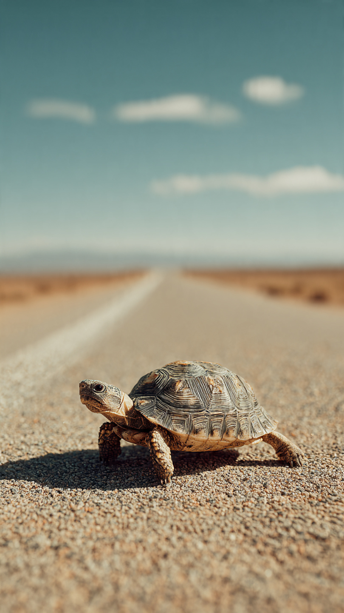

```html
🐢 السلحفاة التي سبقت الريح | قصص أطفال
```
في مكان بعيد بين التلال الخضراء، كانت هناك قرية صغيرة تعيش فيها سلحفاة اسمها توتو.
كانت توتو مختلفة عن باقي السلاحف.
فبينما كانت جميع السلاحف تحب المشي ببطء والاستمتاع بالرحلات الطويلة، كانت توتو تحلم بأن تصبح أسرع سلحفاة في العالم.
كان أصدقاؤها يبتسمون عندما يسمعون حلمها.
قال الأرنب:
"سلحفاة تسبق الريح؟ هذا مستحيل!"
وقالت العصافير:
"قد تكونين لطيفة يا توتو، لكن سرعتك لن تتغير."
لكن توتو لم تغضب.
ابتسمت وقالت:
"ربما لا أستطيع أن أطير مثلكم..."
"لكنني سأحاول بطريقتي."
بدأت توتو تتدرب كل يوم.
كانت تستيقظ مع شروق الشمس، وتمشي فوق التلال، وتتدرب على الطرق الصعبة، وتتعلم كيف تستخدم قوتها بحكمة.
لم تصبح أسرع فجأة، لكنها أصبحت أكثر ثقة بنفسها.
وفي يوم من الأيام، أعلنت الحيوانات عن سباق كبير في الغابة.
كان الجميع يشارك.
الأرنب، والغزال، والطيور...
حتى أن الريح نفسها كانت تهب بقوة في ذلك اليوم.
ضحكت بعض الحيوانات عندما رأت توتو تقف عند خط البداية.
قال الأرنب:
"هل أنت متأكدة أنك تريدين المشاركة؟"
أجابت توتو:
"أنا لا أشارك لأثبت أنني الأسرع..."
"أنا أشارك لأثبت أنني لم أستسلم."
بدأ السباق!
انطلقت الحيوانات بسرعة كبيرة، واختفت توتو خلفهم في البداية.
لكنها واصلت السير بهدوء.
ولم تكن تعرف أن الطريق أمامها يخفي مفاجأة ستغير كل شيء.
📷 الصورة رقم 1

استمرت الحيوانات في الجري بأقصى سرعتها.
كان الأرنب في المقدمة، والغزال يركض بسرعة مذهلة، والطيور تحلق فوق الجميع.
أما توتو...
فكانت تمشي بخطوات ثابتة دون توقف.
بعد فترة، وصل المتسابقون إلى جزء صعب من الطريق.
كان هناك نهر صغير قد فاض بسبب الأمطار، وأصبح من الصعب على الحيوانات عبوره.
حاول الأرنب القفز، لكنه لم يستطع الوصول إلى الطرف الآخر.
وحاول الغزال البحث عن طريق آخر، لكنه ضاع بين الأشجار.
وصلت توتو ببطء إلى المكان.
نظرت حولها وفكرت.
ثم لاحظت وجود بعض الأغصان الكبيرة بالقرب من النهر.
بدأت تجمعها وتصنع طريقًا صغيرًا يساعد الجميع على العبور.
تعجبت الحيوانات وقالت:
"بدلًا من أن تواصلي السباق، توقفتِ لمساعدتنا!"
ابتسمت توتو وقالت:
"الفوز الحقيقي ليس أن أصل وحدي..."
"بل أن نصل جميعًا."
بعد أن عبر الجميع النهر، أكملوا السباق.
لكن حدث شيء غريب.
فقد بدأت الريح تهب بقوة شديدة، وأصبحت الأرض مليئة بالعقبات.
كانت الحيوانات السريعة قد أضاعت طاقتها في البداية.
أما توتو، فكانت لا تزال تسير بنفس الهدوء.
قالت العصافير بدهشة:
"كيف ما زلت مستمرة؟"
أجابت توتو:
"لأنني لم أحاول التغلب على الآخرين..."
"كنت أحاول التغلب على خوفي فقط."
اقترب خط النهاية.
وكان الجميع ينتظر معرفة من سيفوز.
لكن المفاجأة كانت أن توتو لم تكن الوحيدة التي ستتعلم درسًا في هذا السباق.
📷 الصورة رقم 2
اقتربت توتو من خط النهاية بخطوات هادئة.
كان الجميع يراقبها بدهشة.
فقد تجاوزت الحيوانات التي كانت أسرع منها في بداية السباق.
وعندما وصلت إلى النهاية...
وجدت أن الأرنب والغزال قد وصلا قبلها بقليل.
ظن الجميع أن توتو ستشعر بالحزن.
لكنها ابتسمت وقالت:
"لقد فعلت ما أردته تمامًا."
سألها الأرنب:
"لكنّك لم تفوزي بالمركز الأول، أليس كذلك؟"
أجابت توتو:
"ربما لم أكن الأسرع..."
"لكنني أصبحت أقوى، وساعدت أصدقائي، ولم أستسلم."
اقتربت الحيوانات منها وصفقت لها.
وقال الغزال:
"اليوم تعلمنا أن السرعة ليست كل شيء."
وقالت البومة:
"هناك من يصل بسرعة..."
"وهناك من يصل لأنه لا يتوقف."
ومنذ ذلك اليوم، أصبحت قصة توتو تُحكى في كل أنحاء الغابة.
لم تُعرف بأنها أسرع سلحفاة فقط...
بل عُرفت بأنها السلحفاة التي سبقت الريح بإصرارها وشجاعتها.
فقد أثبتت أن الطريق الطويل لا يخيف من يملك العزيمة.
وعندما سألها أحد الصغار يومًا:
"كيف أصبحتِ قوية رغم أنك بطيئة؟"
ابتسمت توتو وقالت:
"لأنني لم أقارن نفسي بالآخرين..."
"كنت فقط أحاول أن أصبح أفضل من نفسي كل يوم."
🐢💨 انتهت القصة 💨🐢
العبرة:
الإصرار والاستمرار يمكن أن يجعلا الإنسان يحقق أهدافًا تبدو مستحيلة.